ภาพพรีวิวงานนำเสนอ 16 หน้า
คลิกภาพเพื่อดูขนาดเต็ม
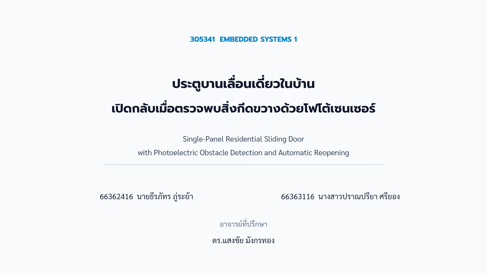
หน้าปก: ประตูบานเลื่อนเดี่ยวในบ้าน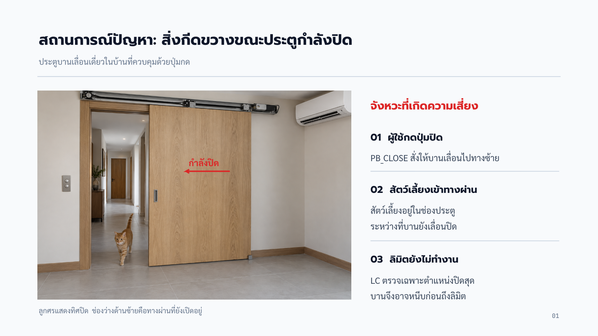
หน้า 01: สถานการณ์ปัญหา: สิ่งกีดขวางขณะประตูกำลังปิด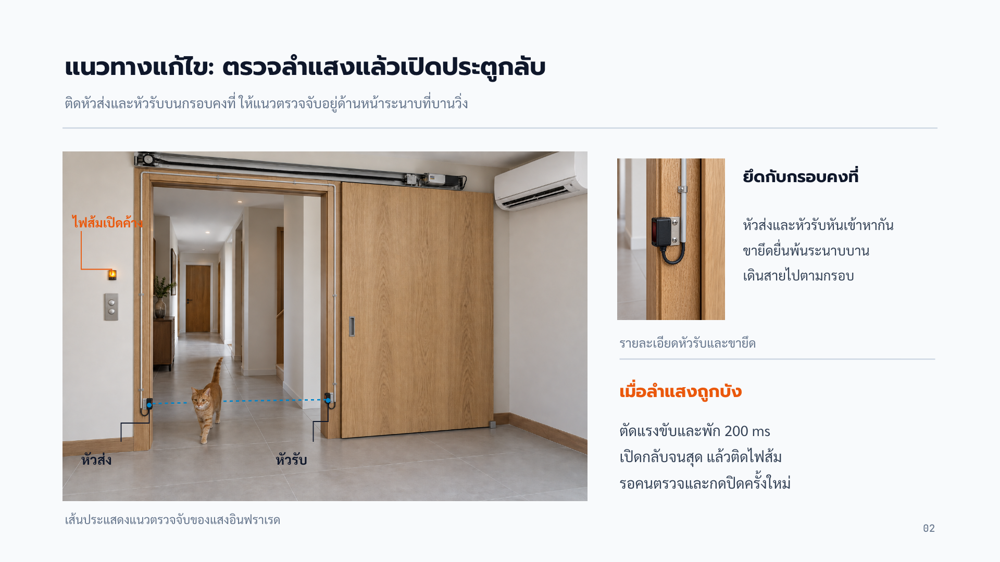
หน้า 02: แนวทางแก้ไข: ตรวจลำแสงแล้วเปิดประตูกลับ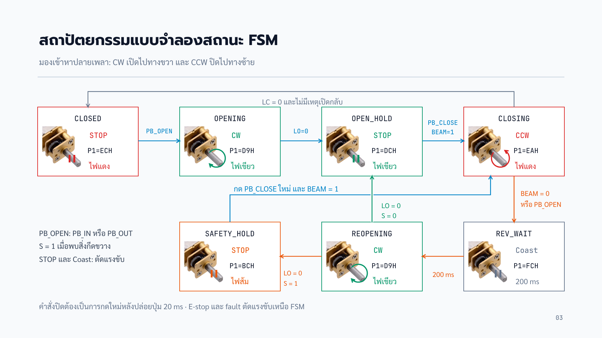
หน้า 03: สถาปัตยกรรมแบบจำลองสถานะ FSM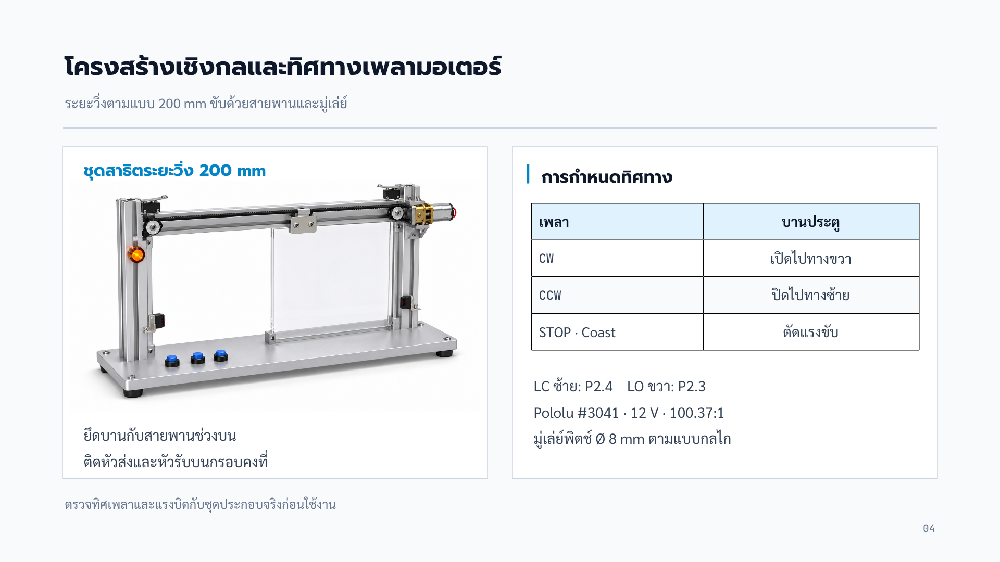
หน้า 04: โครงสร้างเชิงกลและทิศทางเพลามอเตอร์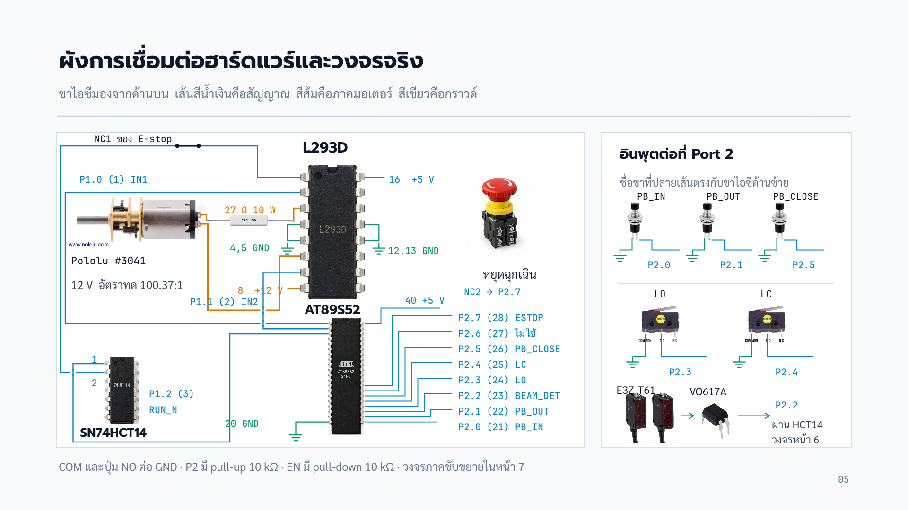
หน้า 05: ผังการเชื่อมต่อฮาร์ดแวร์และวงจรจริง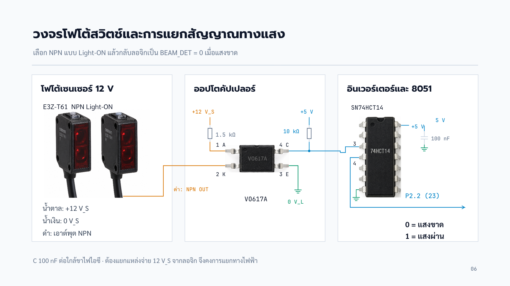
หน้า 06: วงจรโฟโต้สวิตช์และการแยกสัญญาณทางแสง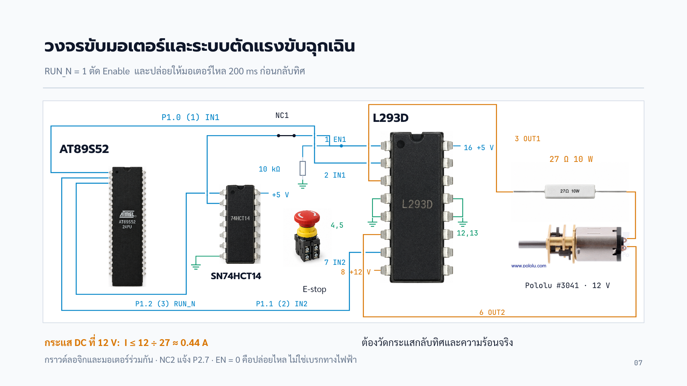
หน้า 07: วงจรขับมอเตอร์และระบบตัดแรงขับฉุกเฉิน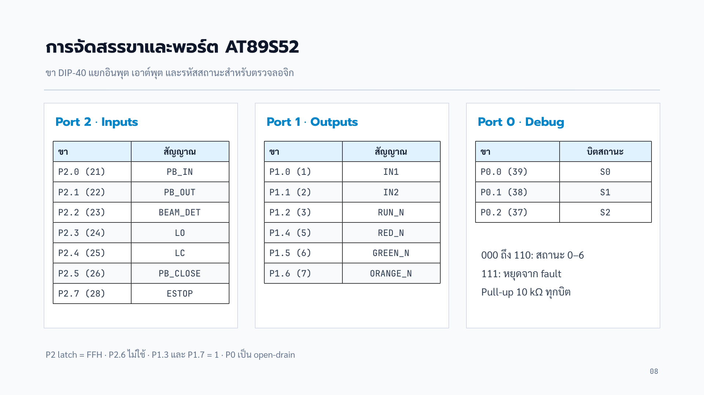
หน้า 08: การจัดสรรขาและพอร์ต AT89S52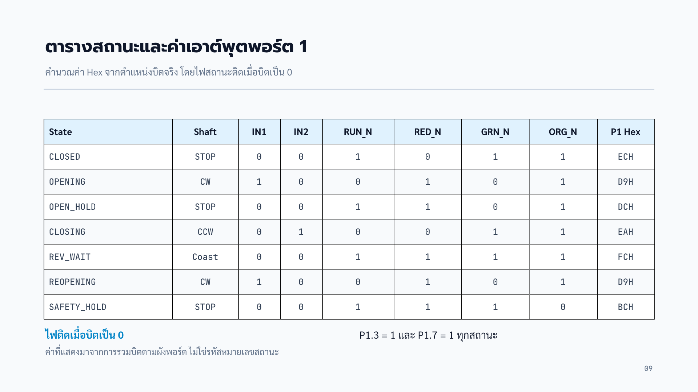
หน้า 09: ตารางสถานะและค่าเอาต์พุตพอร์ต 1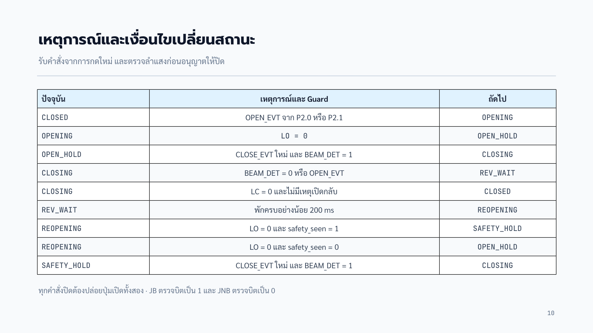
หน้า 10: เหตุการณ์และเงื่อนไขเปลี่ยนสถานะ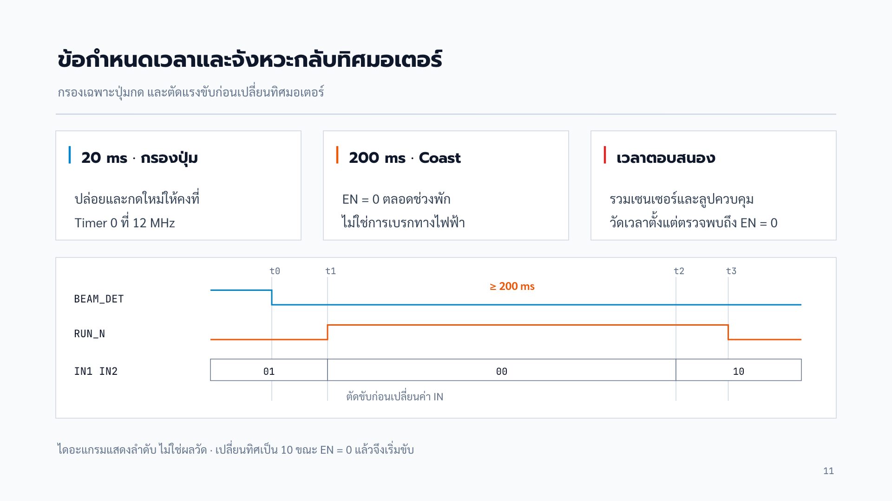
หน้า 11: ข้อกำหนดเวลาและจังหวะกลับทิศมอเตอร์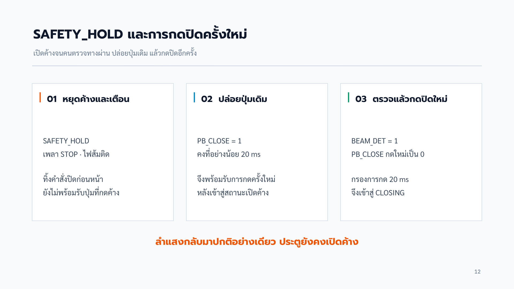
หน้า 12: SAFETY_HOLD และการกดปิดครั้งใหม่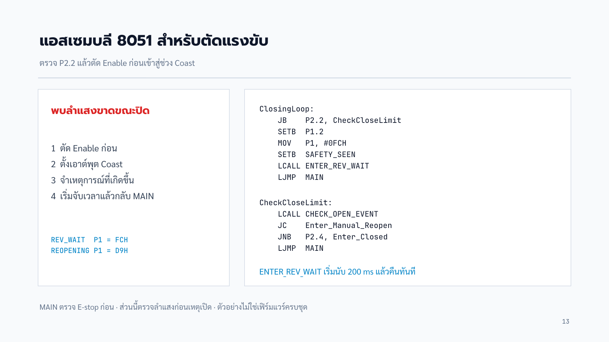
หน้า 13: แอสเซมบลี 8051 สำหรับตัดแรงขับ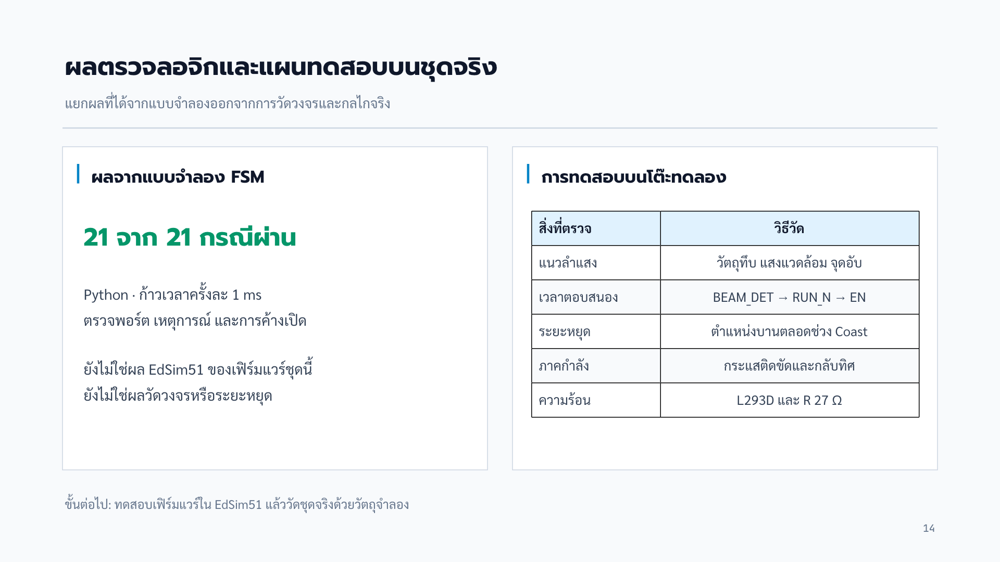
หน้า 14: ผลตรวจลอจิกและแผนทดสอบบนชุดจริง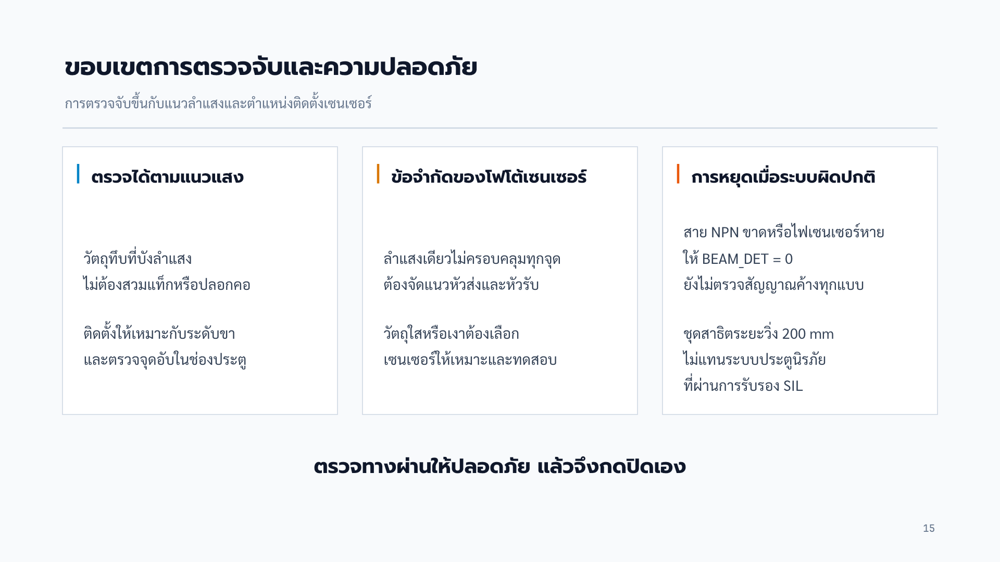
หน้า 15: ขอบเขตการตรวจจับและความปลอดภัย